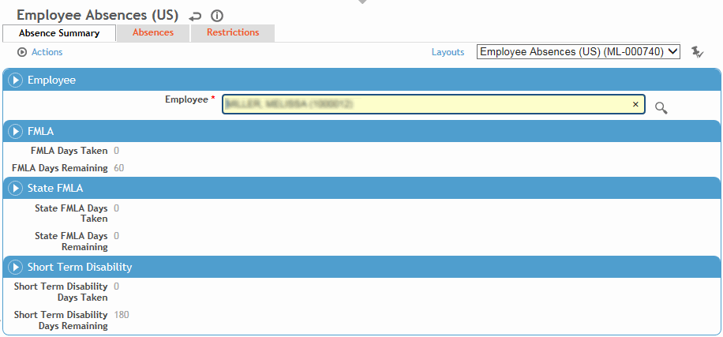

You can use the Absences sub-module to view a history, regardless of case number, of all absences from work and restrictions placed on an employee’s ability to work, or to add new absences and restrictions.
In the Occupational Health menu, click Absence and use the search list to select an employee.

The Absence Summary tab shows the number of days taken in the current calendar year (or past 12 months, depending on your system settings). The number of days remaining for each is calculated based on maximums as follows:
FMLA––A-B, where
A is the maximum value of the FMLA Days Allowed for all cases for the employee where the Date Closed is null or future date (if this field has not been set for a case, Cority uses 60 as the default); and where
B is the number of FMLA days taken in the current calendar year (or past 12 months, depending on your system settings).
State FMLA–defined in the Jurisdiction table.
STD–defined in the system settings (see Changing Your System Settings). Note that the STD period may be defined (in the system setting) as longer than one year.
Days Remaining displays 0 if the case has a Date Closed which is current or past date.
The Absences tab displays all absences recorded for this employee in the Clinic Visits, Incident, or Case Management modules.
Click a link to edit an existing absence, or click New in either the Continuous or Intermittent section. For information about entering an absence, see Recording an Absence.
The Restrictions tab displays all work restrictions recorded for this employee in the Demographic, Medical Chart, Clinic Visits, Case Management, Pulmonary, and Respirator Fit modules. For information about entering a work restriction, see Recording Work Restrictions.
To quickly end all listed restrictions, choose Actions»End All Active Restrictions.
See also About the FMLA Calculation.